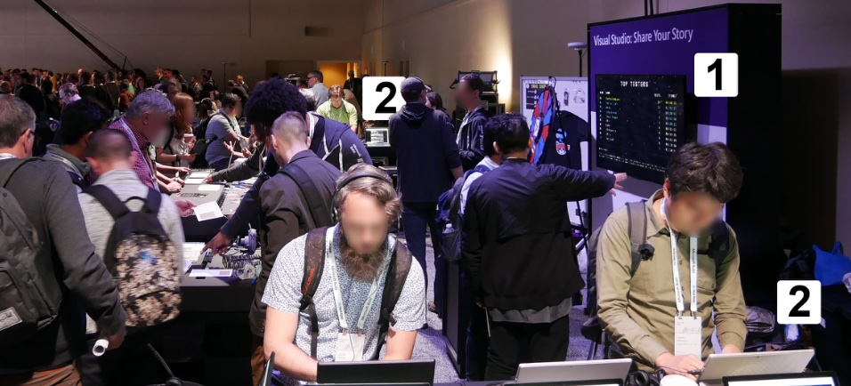
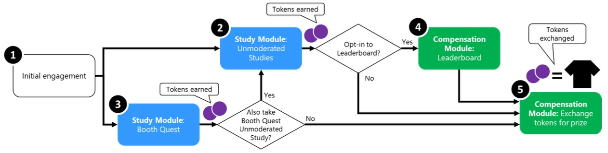
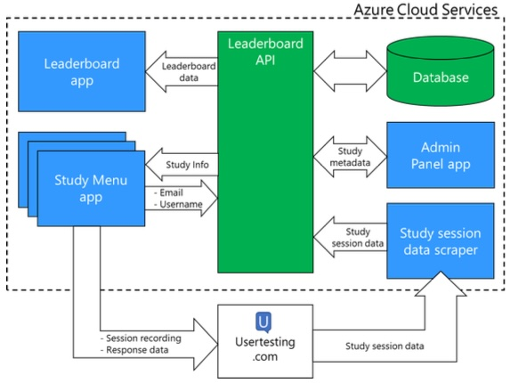

At Microsoft Build 2019, we designed a multi-step research experience to engage developers and gather feedback amid the many competing activities at the conference. Visitors could take unmoderated studies, complete a scavenger-hunt-style Booth Quest, earn tokens, opt into a leaderboard, and exchange tokens for prizes.
 |
| Participant journey across study and compensation activities. |
I built the software platform behind the experience: web apps for the study menu, leaderboard, and administration, supported by an API, database, and virtual machine. Since UserTesting.com did not provide an API for study data, I built a browser-extension scraper that collected session data and sent it to our system.
 |
| System architecture connecting the study menu, leaderboard, API, database, and data scraper. |
The activities generated nearly 600 study responses from 309 participants, as well as an estimated 2,350 visits to product booths. The experience helped scale research participation and bring researchers, product teams, and attendees into conversation. It also surfaced practical challenges, including noisy or missing data, complex participant choices, potential sample bias, and the need to adjust the experience during the event.
Carrascal, Juan Pablo, et al. "Gamifying UX research at scale." Extended Abstracts of the Annual Symposium on Computer-Human Interaction in Play Companion Extended Abstracts. 2019. https://doi.org/10.1145/3341215.3354646
Deployed at Microsoft's Build Conference in 2019.